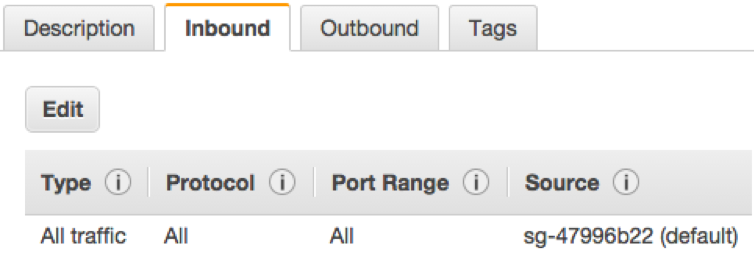
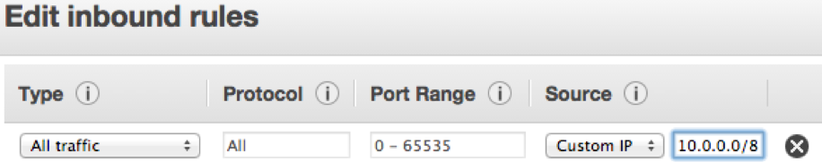
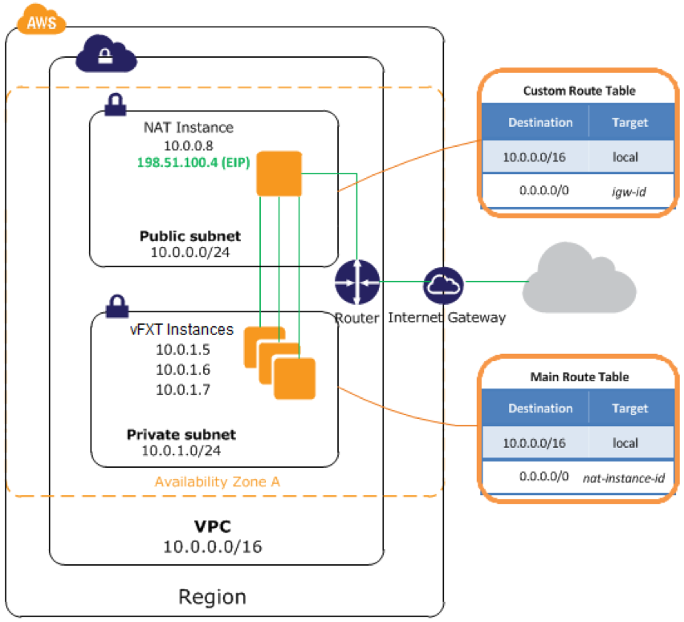

Product requirements¶
This section outlines the prerequisites for creating a vFXT cluster.
- Choose the AWS region and availability zone (AZ) for the vFXT cluster
- Establish an Amazon Web Services account and note the account number
- Create a role that has the required permissions to create and administer the vFXT cluster
- Create an AWS virtual private cloud (VPC)
- Create a subnet within the VPC
- Customize a security group to use for your cluster instances
- Ensure that internet access is available for instances within the subnet
Choosing the AWS region and availability zone¶
You must choose which AWS region will host your cluster, and then choose one or more availability zones (AZ) within that region. Regions are geographically based, and availability zones can be thought of as individual data centers within the same region.
Latency is lowest for traffic within one AZ. Traffic between AZs in the same region also have low latency. Traffic between AZs in different regions can have high latency.
Amazon Web Services regions¶
You must choose which AWS region will host your virtual nodes.
AWS provides resources in global regions - for example, US-West-1 is in northern California, US-East-1 in northern Virginia, and EU-West-1 in Ireland.
Choose a region that is geographically close to the people who need to access your cluster, including data administrators and any client machines that exist outside of the AWS VPC.
AWS availability zones (AZ)¶
Determine how to place your vFXT cluster (or clusters) in appropriate AWS availability zones.
AWS availability zones are similar to different data centers within a region. For example, the availability zones us-west-1a, us-west-1b, and us-west-1c are all in separate physical buildings within the us-west-1 region.
The recommended configuration is to place all nodes for a single vFXT cluster within a single AZ. Customers can have a cluster in one availability zone and one in another AZ.
It also is possible to create a cluster with nodes in multiple AZs, which provides disaster recovery support and enhanced fault tolerance but increases latency for routine cluster transactions. Read Multiple availability zone (Multi-AZ) support in this document’s appendix to learn about the drawbacks, possible benefits, and additional configuration required to create a multi-AZ vFXT cluster.
AWS account¶
The vFXT AMI is a private AMI for customers who are evaluating or purchasing the vFXT series platform.
To access the vFXT AMI and create vFXT nodes, you must provide a valid AWS account number to Avere Systems. Avere provisions access to the AMI based on account ID.
Make sure that you provide an account number that is valid for the region (or regions) where you plan to run your vFXT instances. If you want to create a cluster in a non-public region, you must provide an account with privileges in that region.
AWS permissions¶
AWS user permissions are controlled in the Identity and Access Management (IAM) section of the AWS console. Several specific permissions are needed to create a vFXT node.
For a list of IAM permissions needed for vFXT cluster creation in Amazon EC2, please see Creating the IAM role.
AWS virtual private cloud (VPC)¶
When creating a vFXT cluster, you must provide it a VPC identifier.
An AWS VPC is a private network infrastructure that allows the segregation of network resources (like servers, routers, and clients) from other networks, both public and private.
A VPC runs within a single AWS region.
When creating a VPC, you provide a CIDR block of IP addresses for the VPC - for example, 10.99.0.0/16.
Because the VPC isn’t exposed to the internet, a network administrator must configure how users connect to the cluster.
Connection methods include:
- AWS Direct Connect with all traffic passing through the corporate firewall
- A persistent VPN established between an Availability Zone and the corporate network
- A NAT instance managing internet-based traffic into and out of a VPC and its subnets
This document includes instructions for configuring a NAT instance, since that’s the most commonly used method.
Each VPC has an identifier, or VPC ID, which is used to reference that unique VPC. The ID is a series of letters and numbers, like vpc-abcd5678. The VPC ID is required when configuring a vFXT cluster.
For more information, refer to Amazon’s documentation on VPCs.
Subnet¶
Within the VPC, you need one or more IP subnets for the cluster.
- Each subnet must be contained in a single availability zone.
- If using NAT for VPC access, you must create one public subnet and one private subnet. The public subnet hosts the NAT instance that provides access to the internet gateway. The private subnet serves the vFXT cluster.
- Make sure that the subnet has sufficient IP addresses available to support the instances and services that use it. The vFXT cluster needs at least two IP addresses per node, a few IP addresses for cluster overhead, and a range of client-facing addresses to service requests. Any client instances that reside within the cluster’s subnet also will need IPs.
For more information, refer to Amazon’s documentation on Subnets for VPCs.
Security groups¶
You should create a customized security group for your cluster before starting the vFXT node and cluster creation process.
An AWS security group is a firewall that is assigned to an instance. Security groups control incoming and outbound traffic for that instance based on port and on source and destination IP addresses.
Security groups control traffic at the instance level, not at the subnet level.
For example, a security group can include a rule that allows inbound port 22 TCP traffic from 192.168.0.0/16. When that security group is associated with one or more instances, those instances will accept inbound traffic from that IP address range on port 22.
Default security group settings don’t allow all of the kinds of traffic that a vFXT cluster needs. During cluster creation, you must either select a preexisting security group or create a new one with the default configuration. If you create a default security group, you will have to reconfigure it before you can use the cluster.
For more information, refer to Amazon’s documentation on Security Groups for VPCs.
Security group settings¶
When instantiating a vFXT cluster, you need to specify a security group. However, the inbound traffic settings on this security group must be customized to support the cluster. You can change the security group settings either before or after creating the cluster.
By default, security groups only allow traffic that originates from within the security group.
{kind=link}
You must configure the security group to allow all traffic originating from that subnet.
To change inbound traffic rules, click the Edit button and change the source setting from the security group name (sg-xxxxxxxx) to the subnet range (for example, 10.0.0.0/8).
{kind=link}
You also must make sure the port rules allow inbound traffic from ports 22, 80, and 443.
Outbound rules also can be customized, but the vFXT cluster does not require any specific configuration for outbound traffic.
Changing security groups¶
You can switch from one security group to another after the cluster is created and configured. To change the group, right-click on a vFXT instance and select Change Security Groups. This change can be done while the nodes are running, but be sure to repeat the change for all of the nodes in the cluster.
Internet access¶
vFXT nodes need internet access to communicate with AWS, but they must not be assigned public IP addresses. So the EC2 instance must be able to access the internet but not by using a public address.
This is usually accomplished by providing access using one of these methods:
- AWS Direct Connect
- A VPN tunnel
- A NAT instance
Review the Internet exposure section of the Precautions chapter for warnings.
The cluster requires internet access for several infrastructure tasks:
- During cluster setup, it needs to access the latest vFXT updates and to create an S3 bucket (if you are using one).
- During cluster operation, it needs access when IP addresses need to move from one node to another for load-balancing or failover reasons. This movement of IP addresses must be communicated back to AWS through APIs, requiring access to Amazon EC2 in that region.
- The cluster also requires name resolution (DNS) for amazonaws.com addresses. Name resolution for the amazonaws.com domain is typically handled by a private DNS server that is automatically assigned by Amazon at the time of the EC2 instance creation.
Routing¶
If using NAT for internet access, you will need to configure two route tables in the VPC - one for the public subnet used by the NAT instance, and one for the private subnet used by the cluster vFXT nodes.
The public route table should point its default route (0.0.0.0/0) to the Internet Gateway (IGW). The private route table should point its default route to the NAT instance.
After creating the route tables, they must be associated with their respective subnets.
AWS NAT configuration¶
A popular solution to provide internet access to vFXT nodes is to use Network Address Translation (NAT) to provide internet access to machine instances within the VPC. Instances in the private subnet pass traffic to the NAT gateway. The NAT gateway passes traffic to the VPC’s internet gateway (IGW). External traffic will use the NAT gateway’s elastic IP (EIP) address, which is a public-facing IP address.
NAT setup and configuration information can be found in the following links:
If using either of the latter two options, you will need to disable the NAT source/destination check to allow communication to the internet. More information about disabling that check can be found here.
Reference diagram¶
This diagram illustrates relationships in vFXT AWS infrastructure.
{kind=link}
For more information, refer to Amazon’s documentation on NAT instances for VPCs.